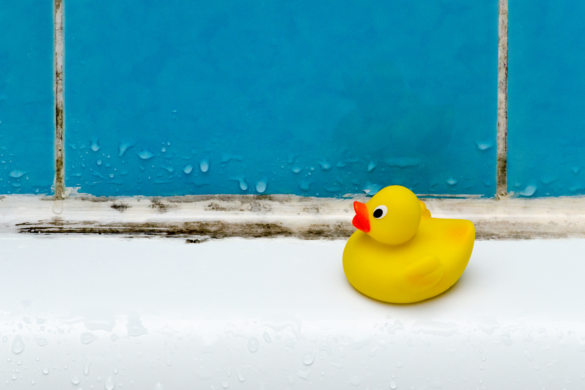

We provide professional mold inspections and remediation services that help property owners identify serious mold problems early and take immediate action to protect their buildings, health, and long-term property value.
Mold rarely waits for permission to spread. When conditions are right, it grows fast, travels quietly, and causes damage that goes far beyond surface stains. Knowing the signs your property needs mold remediation now can be the difference between a controlled cleanup and a costly restoration project. Mold affects indoor air quality, structural materials, and the well-being of everyone inside the space. The sooner it’s addressed, the easier it is to stop.
One of the clearest indicators of an active mold problem is a strong, musty smell that lingers no matter how often you clean. This odor is caused by microbial volatile organic compounds released as mold grows and spreads. If a room smells damp, earthy, or stale even when it looks clean, mold is often present behind walls, under flooring, or inside ventilation systems.
Odors are especially concerning when they become stronger after rain, plumbing use, or changes in humidity. This usually means moisture is feeding hidden growth that requires professional mold remediation, not surface cleaning.
Mold doesn’t always look dramatic. It can appear as faint gray patches, white fuzz, brown spotting, or dark stains that slowly expand over time. These areas may show up on drywall, ceilings, baseboards, or around windows and doors.
A major red flag is staining that returns after cleaning. If marks disappear briefly and then come back, the source is likely deeper than the surface. Paint or bleach may hide the problem temporarily, but mold continues growing underneath, spreading into surrounding materials.
Any property with unresolved water issues is at high risk for mold. Leaking pipes, roof damage, appliance failures, foundation seepage, and flooding all create ideal conditions for mold growth. Even if the water damage happened weeks or months ago, mold may still be spreading out of sight.
Mold can begin growing within 24 to 48 hours after moisture exposure. Drying visible areas alone does not remove moisture trapped inside walls, insulation, or flooring. This is why professional water damage restoration is often necessary to prevent or stop mold contamination.
Unexplained health symptoms are often one of the most overlooked signs of mold. Frequent sneezing, coughing, headaches, eye irritation, congestion, or skin irritation that improves when you leave the property may be linked to mold exposure.
Children, older adults, and individuals with asthma or allergies tend to experience stronger reactions. If multiple occupants experience similar symptoms, especially in the same areas of the building, indoor mold should be considered a serious possibility.
Physical changes to building materials often point to moisture problems that support mold growth. Paint that peels, blisters, or cracks usually indicates water trapped beneath the surface. Drywall that feels soft or looks swollen is another warning sign.
Warped wood flooring, buckling laminate, or loose tiles can also signal moisture below the surface. Mold frequently develops under flooring where it spreads undisturbed for long periods, weakening materials and increasing repair costs.
Certain areas of a property are especially vulnerable to mold due to humidity and limited airflow. Bathrooms with poor ventilation often develop mold behind toilets, under sinks, and above ceilings. Basements and crawlspaces trap moisture from groundwater and foundation leaks, making them prime locations for hidden growth.
Attics are another common trouble area. Roof leaks, insulation gaps, and condensation can allow mold to grow on rafters and insulation. Left untreated, attic mold often spreads downward into living spaces.
If you notice musty smells coming from air vents or worsening symptoms when the HVAC system is running, mold may be present in ductwork or air handlers. Mold spores can circulate throughout the entire property once they enter the ventilation system, spreading contamination far beyond the original source.
HVAC-related mold issues require professional containment and cleaning to prevent cross-contamination and protect indoor air quality.
If you’ve tried to clean mold yourself and it keeps returning, that’s a strong sign professional remediation is needed. Household cleaners rarely address the root cause of mold, which is moisture. Scrubbing visible areas without proper containment can also release spores into the air, spreading mold to other parts of the property.
Certified mold remediation focuses on identifying moisture sources, isolating affected areas, removing contaminated materials safely, and restoring the space correctly.
For business owners, mold issues carry added risk. Mold can impact employee health, disrupt operations, and create liability concerns if customers or tenants are affected. Odors, visible growth, or air quality complaints should be addressed immediately to protect both people and the business itself.
Professional documentation and remediation are especially important for insurance claims and regulatory compliance.
When you need mold removed quickly and correctly, S.W.A.T. Restoration is ready to respond. Our team provides professional inspections, certified mold remediation, and full restoration services to stop mold at the source and prevent it from returning. We identify hidden growth, address moisture issues, and restore affected areas with care and precision.
If you’re seeing any of these warning signs, waiting can allow mold to spread and damage to multiply. Contact S.W.A.T. Restoration today to schedule an inspection and protect your property, your health, and your peace of mind.